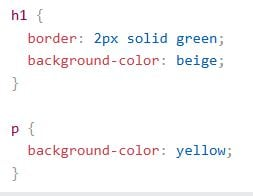
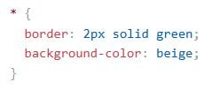
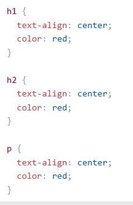
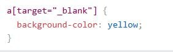

CSS selectors are used to find or select the HTML elements that you want to style.
The element selector selects all instances of a specific HTML element, such as <p>, <div>, or <h1>.
Use an element selector to apply a style to all occurrences of a tag on the page.
The universal selector selects every single HTML element on the page using the asterisk (*) character.
Use the universal selector when you want to style all elements — for example, resetting margins, padding, or box-sizing.
The group selector allows you to select multiple elements and apply the same style to all of them at once.
Use a group selector when several elements share the same styling — it helps reduce repetitive code.
The attribute selector allows you to style elements based on their attributes or attribute values.
Use this when you want to apply styles to elements with specific attributes, such as links with certain href values.
In this lesson, I learned about the six types of CSS selectors, their syntax, and their unique purposes. Understanding how and when to use each selector helps make web design cleaner, more organized, and efficient.